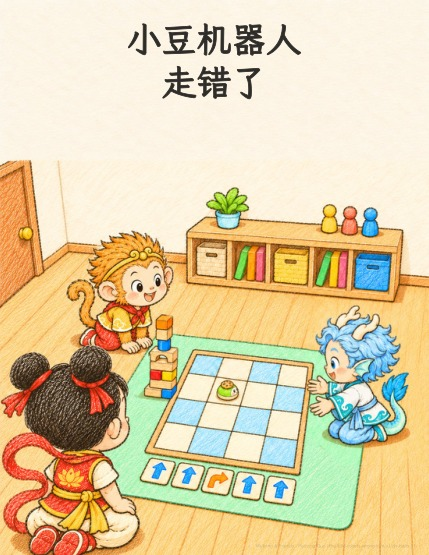

儿童蜡笔涂鸦 · 18 页
小豆机器人走错了
The Little Robot’s Wrong Turn · 英文原版
哪吒的小机器人小豆要背着一块饼干，走过方格地垫，送到敖丙那里。可是一个转弯走错了，它一头撞倒了悟空的积木塔！朋友们没有全部重来，而是一张一张地查卡片，找到错的那一张，只把它改对。
睡前绘本 · 约 5岁半 · 免费阅读与打印
一起翻开小冒险。
点击按钮、按左右方向键，或左右滑动来翻页。

想留着以后读： 下载 PDF
怎样打印成一本小书？
下载「打印小册子」版：US Letter 横向，双面短边翻转（Short Edge），100% 实际大小，每张纸 1 个 PDF 页，按正常顺序打印。每个 PDF 页已经排好两个书页。
打印小册子共 20 页，包含封面、作者页和封底；内封底特意留白。
这本需要 5 张纸；末尾补 0 个空白书页。把纸套叠、对折，再沿中缝装订。
版本记录
- v1 · — 第一版。
小小心意，让故事继续生长
一起种下下一个故事。
故事可以免费阅读和打印。如果你和孩子喜欢，欢迎支持我继续创作。